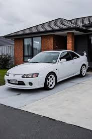
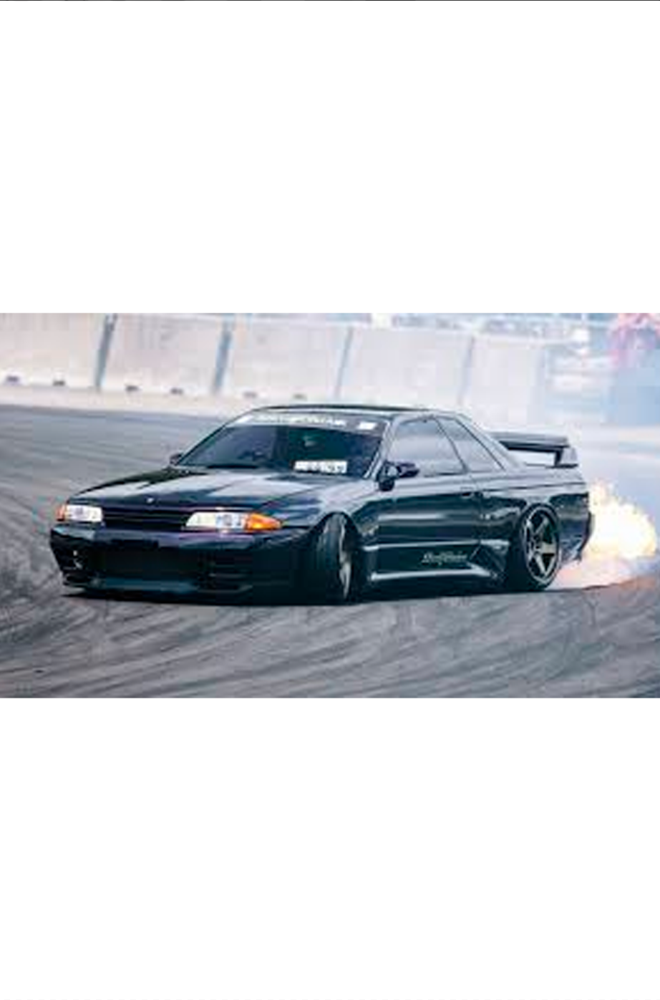

Стили JDM
Что такое JDM? Важное уточнение
Изначально термин JDM означает Japanese Domestic Market — то есть товары
и автомобили, предназначенные для внутреннего рынка Японии. Это могут быть
специфические модели (например, Honda Integra Type R), детали (фары, двигатели)
или опции, которых не было в других странах.
Со временем «JDM» стало обозначать стиль тюнинга, который вдохновлен этими японскими автомобилями и их гоночной культурой. Истинный дух JDM — это функциональность, минимализм и уважение к инженерной мысли.

Оригинальный / OEM+ Стиль (OEM+ Style)
Философия: «Улучшить, не испортив». Это самый уважаемый и сдержанный стиль.
Что делают:
- Устанавливают детали от более спортивных версий той же модели (например, диски от Honda S2000 Type S на обычную S2000).
- Используют качественные аксессуары от официальных тюнеров (Mugen, Nismo, TRD, STI).
- Легкий тюнинг подвески для улучшения управляемости.
- Сохранение оригинального или почти оригинального внешнего вида.
- Машины: Любые, но особенно ценится на классических японских иконах (Nissan Skyline GT-R, Toyota Supra, Honda NSX).
 Стрит-стайл / Шакотан (Street Style / Shakotan)
Стрит-стайл / Шакотан (Street Style / Shakotan)
Философия: Агрессивный, приземленный вид, вдохновленный японскими уличными гонками 90-х (например, гонками по трассе Wangan).
Что делают:
- Очень низкая посадка за счет жесткой пневмо- или койловеров.
- Отрицательный развал колес, особенно на задней оси.
- Широкие диски с сильно вывернутыми наружу краями (hellaflush).
- Часто используются обвесы «оклеванс» (kissel) — широкие колесные арки.
- Машины могут быть в «боевом» состоянии — царапины, вмятины (это часть эстетики).
- Машины: Nissan Silvia (S13, S14, S15), Nissan Skyline, Toyota Chaser, Mark II.

Дрифт-стайл (Drift Style)
Философия: Функциональность для дрифта. Внешний вид следует за целью.
Что делают:
- Широкие обвесы для улучшения аэродинамики и защиты кузова при столкновениях с отбойниками.
- Вывернутые колеса с большим вылетом для максимального сцепления.
- Часто отсутствуют бамперы, фары, капот — все ради легкости и вентиляции.
- Яркие, кричащие ливреи, спонсорские наклейки.
- Большой выхлоп (как правило, «труба» напрямую).
- Машины: Nissan Silvia, Toyota AE86, Nissan 180SX, Mazda RX-7 (FD).